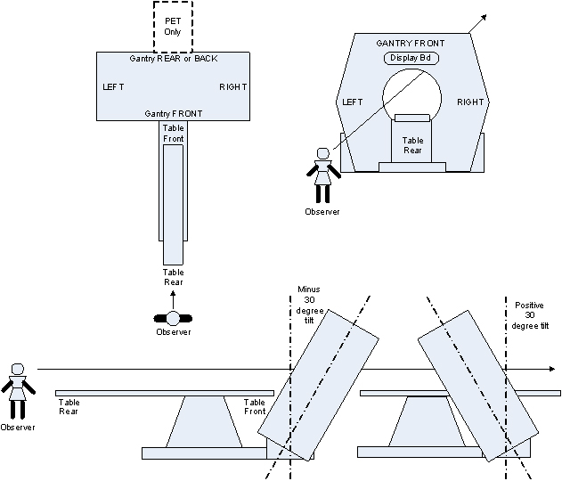

Operating Documentation
Direction 5196839-800, Rev# 6
RT16 and Xtra Service Info Adv
Operating Documentation |
| Last Revised: | 18 April 2007 |
This section contains general safety information. Individual service procedures contain specific safety information related to the service task and take priority over this general information.
Use “Two Man Service” wherever necessary, to ensure safety at all times. Never restore power to the gantry without a direct view of the gantry/system. If you are attempting to restore power but cannot visually monitor the gantry/system’s operation when power is restored to it, use an observer. Place an observer within visual and communication range of the gantry/system to ensure the gantry is restored to a powered on condition, safely.
GE scanners are designed to be safely operated only when all system covers are in place. Removal of a cover for any reason defeats the protection they provide, and potentially exposes patients and operators to hazards. If any of the covers should become damaged, you should contact your local GE Sales or Service representative immediately for replacement or repair. Only qualified service personnel trained in the service and operation of this scanner should remove any cover or service this equipment.
Safety features have been incorporated into the design for everyone’s protection. Equipment covers remain the primary means of protection to patients, operators and service personnel. Secondary protection covers are also employed to protect service personnel.
When servicing the system, spatial orientation is defined from the perspective of an observer standing at the end of the patient table looking towards the Gantry Display board, through the gantry. This orientation defines a negative or minus gantry position which places the top of the gantry leaning away from the observer. See Illustration 1.
Illustration 1: Service Orientation

This publication and its many service procedures are written at a level meant for Field personnel that have been trained and qualified to work on this system. They are not designed to be used for self directed "On The Job" training of Field Service personnel. If you have not done a specific procedure before, it is highly recommended that you seek the supervision and expertise of your Field Leadership team. Procedures change periodically. All procedures should be read thoroughly regardless of training level and experience prior to beginning a procedure. If you do not clearly understand the steps within the procedure or how to safely proceed STOP the service action immediately and consult your Field Leadership before proceeding.